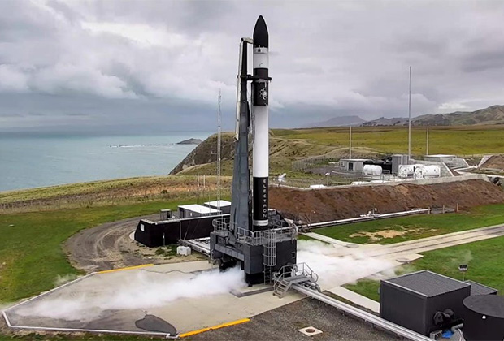
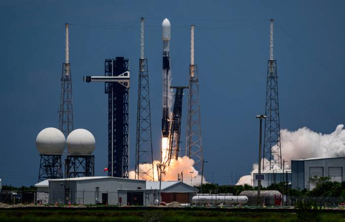

Основные типы космических ракет
Космические ракеты — это мощные транспортные системы, предназначенные для вывода полезных грузов и экипажей за пределы атмосферы. Они бывают одно-, двух- и многоступенчатыми: каждая ступень обеспечивает свой участок полёта
По типу используемого топлива ракеты делятся на жидкостные, твёрдотопливные и гибридные. Жидкостные двигатели позволяют регулировать тягу и повторно включать двигатель, твёрдотопливные отличаются простотой и надёжностью, а гибридные сочетают достоинства обеих технологий.
Назначение ракет также различается. Одни применяются для вывода спутников связи и навигации на орбиту Земли, другие — для пилотируемых миссий и межпланетных исследований. Существуют также ракеты военного назначения и носители для научных экспериментов.
Современные ракеты отличаются высокой степенью автоматизации и точности управления. Благодаря новым материалам и системам навигации они способны доставлять грузы на орбиту с минимальными затратами топлива и с высокой надёжностью.
Космическая отрасль развивается стремительно: создаются сверхтяжёлые ракеты для полётов к Луне и Марсу, исследуются новые типы топлива и конструкций. Всё это приближает человечество к эпохе активного освоения дальнего космоса.
В будущем ракеты будут использоваться не только для вывода аппаратов, но и как часть глобальной транспортной системы.
Списки лучших космических ракет для путешествий
ПодробнееРакеты малой дальности (лёгкие носители)
Грузоподъёмность: до 2 тонн на низкую околоземную орбиту (НОО). Используются для небольших спутников, микроспутников и группировок «кубсатов».
- Чаще всего имеют 2–3 ступени.
- Используются для коммерческих пусков и быстрых запусков лёгких аппаратов.
- Запуск обычно дешевле и проще в организации.
Примеры: российская «Союз-2.1в» (до 2 т), американская Electron (300 кг), индийская PSLV Light.
 ПодробнееСредние ракеты
Грузоподъёмность: 2–20 тонн на НОО. Используются для запуска навигационных систем, пилотируемых кораблей, научных аппаратов и средних грузов к МКС.
- Могут работать как на НОО, так и на геопереходную орбиту (ГПО).
- Часто являются «рабочими лошадками» космонавтики.
Примеры: российский «Союз-2» (до 8 т), американская Falcon 9 (22,8 т на НОО в одноразовом варианте), европейская Ariane 5 (10 т на ГПО).
 ПодробнееТяжёлые ракеты
Грузоподъёмность: 20–50 тонн на НОО. Используются для доставки больших грузов к Луне, Марсу, тяжёлых космических станций или модулей для МКС.
Подробнее
Тяжёлые ракеты
Особенности: многомоторные ступени, иногда в кластерной схеме. Часто используются для межпланетных миссий.
Примеры: советский «Протон-М» (23 т), американская Delta IV Heavy (28 т), китайская Long March 5 (25 т).
Подробнее
Сверхтяжёлые ракеты
Грузоподъёмность: более 50 тонн на НОО. Используются для межпланетных миссий, пилотируемых полётов на Луну и Марс, крупные космические аппараты.
ПодробнееСверхтяжёлые ракеты
Особенности: огромные размеры (50–100 м), проектируются для освоения дальнего космоса. Стоимость запуска чрезвычайно высока, но они незаменимы для освоения дальнего космоса.
Примеры: Saturn V (140 т), SpaceX Starship (до 150 т), NASA SLS (95–130 т), российская «Енисей» (в разработке).
Подробнее